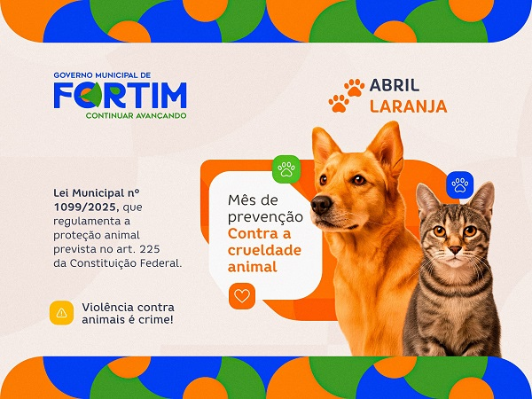
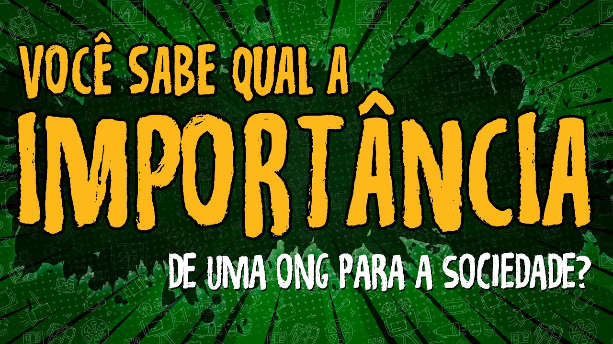

ONGs |
|
|
Página Inicial Campanhas ONGs Leis Sobre |
As principais ONGs que protegem os animaisInstituto Luísa Mell (ILM): Atua no resgate de animais feridos ou em situação de risco, mantendo
um abrigo com centenas de cães e gatos.  Impôrtancia das ONGs As Organizações Não Governamentais (ONGs) são fundamentais para o desenvolvimento social, atuando
onde o Estado |
| Julio Vieira - Lucas Zelioli - 1C3 - Site Educacional | |